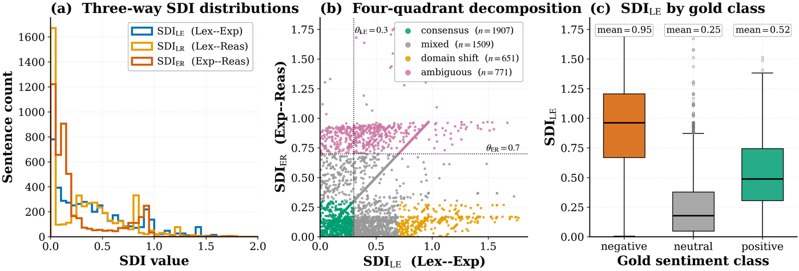

TriAgent → Semantic Divergence Index
The Semantic Divergence Index
An unsupervised routing signal for multi-tier LLM pipelines: the absolute difference between two models' scores, computed from outputs you already have.
Definition
Let s_V, s_F, s_L ∈ [−1, +1] be the continuous scores emitted by three agents operating at different contextual granularities — a word-level lexicon, a sentence-level encoder, and a cross-sentence reasoner. The Semantic Divergence Index is defined pairwise:
SDI_LE = |s_V − s_F| lexicon vs. encoder
SDI_LR = |s_V − s_L| lexicon vs. reasoner
SDI_ER = |s_F − s_L| encoder vs. reasonerEach SDI lies in [0, 2]. That is the whole definition — SDI is arithmetic, not a learned quantity, which is why a TriAgent router needs no labelled routing data and nothing has to be retrained when a model is swapped out.

SDI_LE of 0.945 — the lexicon and the encoder disagree most sharply on exactly the class that matters most for risk management.Why disagreement beats confidence
A conventional cascade escalates when the cheap model reports low confidence. That signal comes from a single model and therefore inherits that model's blind spots — it cannot detect the case where the model is confidently wrong.
SDI comes from comparing models that fail in different places. TriAgent's tiers are orthogonal by construction: each consumes a strictly larger context window than the previous, so the errors they can commit are structurally different. Measured on Financial PhraseBank, pairwise Cohen's κ ranges from 0.19 to 0.61, and pairwise Jaccard error overlap is only 0.132 to 0.146.
The measurement that makes the case. When FinBERT's and Qwen-7B's scores differ by more than 0.7 — 15.9% of Financial PhraseBank — Qwen-7B's accuracy is 28%, below chance for a three-way task. Its mean stated confidence on those rows is 0.93, so a confidence threshold on the LLM would not flag them. FinBERT is right on 71% of the same rows. The correct move is to trust the specialist, not the confident reasoner.
Four-quadrant routing
Thresholding the pair (SDI_LE, SDI_ER) at SDI_LOW = 0.3 and SDI_HIGH = 0.7 partitions query space into four regions. The rules are checked in the order below, so a row where both divergences are high counts as ambiguous. Accuracies are measured on Financial PhraseBank.
| Quadrant | Rule | Reading | Share | Qwen-7B acc. | FinBERT acc. |
|---|---|---|---|---|---|
| Ambiguous | SDI_ER > 0.7 | encoder and reasoner strongly disagree | 15.9% | 28.1% | 70.8% |
| Consensus | SDI_LE < 0.3 and SDI_ER < 0.3 | all three scores are close | 39.4% | 96.5% | 96.4% |
| Domain shift | SDI_LE > 0.7 and SDI_ER < 0.3 | lexicon disagrees with the other two | 13.5% | 95.5% | 95.5% |
| Mixed | everything else | moderate disagreement | 31.2% | 87.2% | 86.0% |
Choosing the thresholds
Thresholds are set per task by a grid search on a held-out 20% validation split, minimising expected per-query cost subject to macro-F1 staying within 1 percentage point of the always-LLM baseline. The sweep is monotone: any (θ_LE, θ_ER) inside [0.2, 0.4] × [0.6, 0.8] is Pareto-comparable, within 0.4 percentage points of the reported operating points. The router is therefore not fragile to the exact threshold, and the same recipe transfers to a new task without hand-tuning.
One signal, three jobs
SDI was designed as a routing signal. Two further uses fell out of the architecture rather than being designed in:
| Use | Mechanism | Measured |
|---|---|---|
| Routing | four-quadrant threshold on (SDI_LE, SDI_ER) | 1.5% of queries reach the expensive tier |
| Trust scoring | SDI_ER as a "the LLM is wrong" flag | AUC 0.898 |
| Cache admission | low divergence means the answer is safely cacheable | 95% cross-lingual hit at F1 0.99 |
Only cross-granularity pairings carry signal
Not every pairing is informative, which is itself evidence for the granularity-stratification premise. Evaluated as hallucination detectors on Financial PhraseBank:
| Variant | Pairing | AUC |
|---|---|---|
SDI_LE | lexicon vs. encoder | 0.620 |
SDI_LR | lexicon vs. reasoner | 0.575 |
SDI_ER | encoder vs. reasoner | 0.898 |
SDI_max | max of the three | 0.782 |
Disagreement in general is a weak signal. Disagreement across granularities is a strong one.
A note on the name
The acronym SDI is overloaded elsewhere — Shannon Diversity Index in ecology, Spatial Data Infrastructure in geoinformatics, Sustainable Development Indicator in policy. In TriAgent and the work that cites it, SDI always means Semantic Divergence Index.